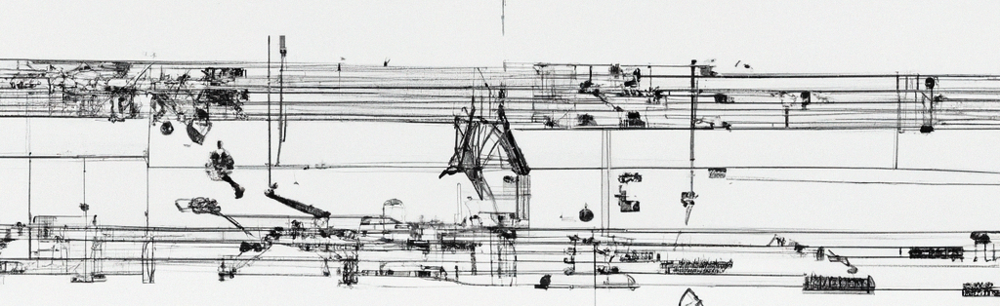
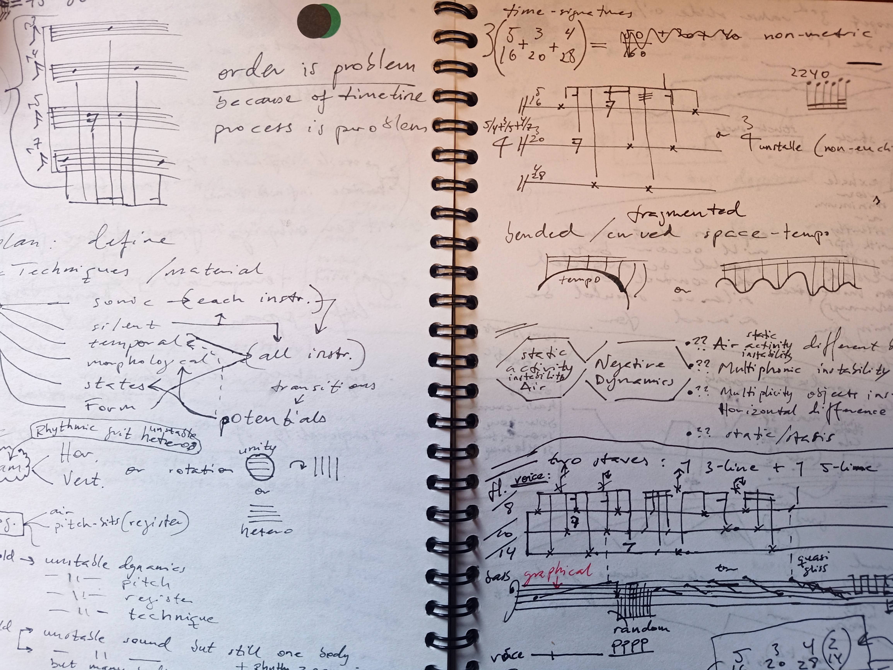
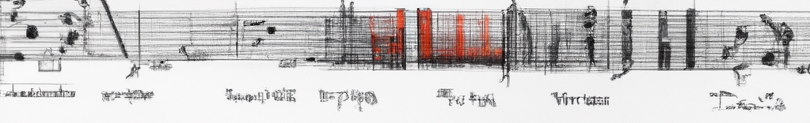
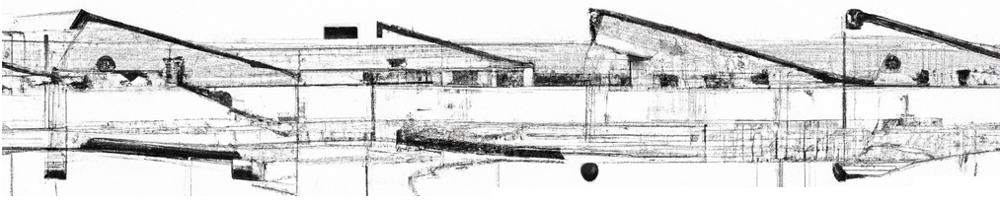
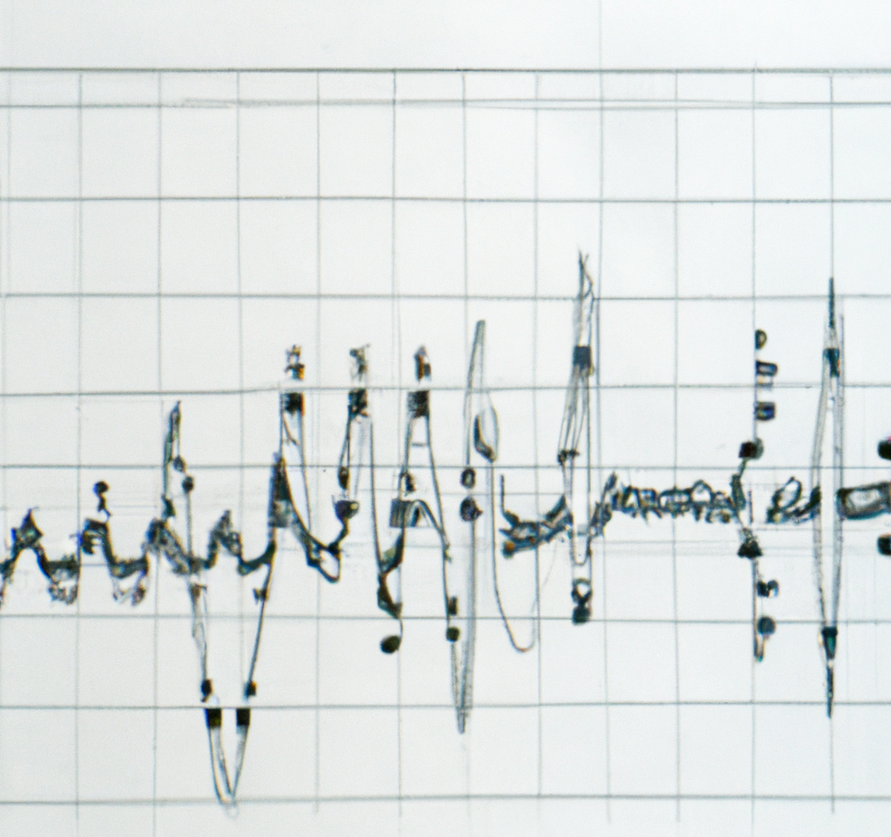
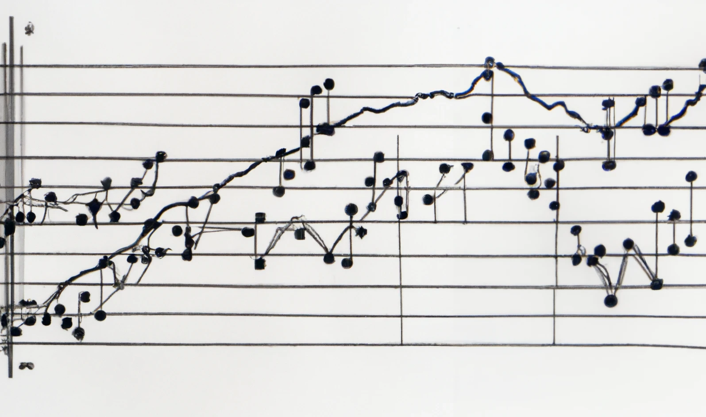
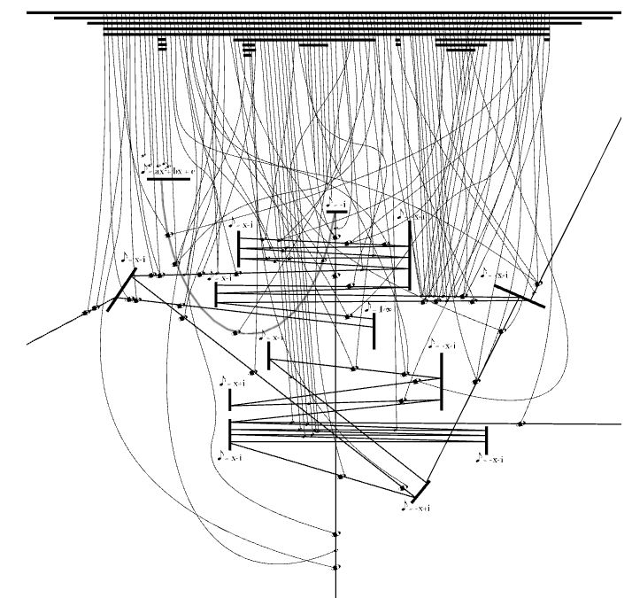

Home
Welcome







About
Einar Torfi Einarsson (1980) was born in Iceland and studied initially composition at Reykjavik College of Music with Hróðmar I. Sigurbjörnsson, Kjartan Ólafsson and Guðmundur Hafsteinsson. He received his Ph.D. in composition from the University of Huddersfield where he studied with Aaron Cassidy on the Jonathan Harvey Scholarship. Previous composition studies were with Fabio Nieder at the Conservatorium van Amsterdam, where he also studied with Richard Ayres and Willem Jeths, graduating with a MMus degree in 2009. Einar did also study with Beat Furrer at the Kunstuniversität in Graz. In 2008, he was a composer in residence at the Ligeti Academy in Amsterdam organized by Asko/Schönberg Ensemble. He has attended masterclasses and private lessons from a.o. Salvatore Sciarrino, Brian Ferneyhough, Jonathan Harvey, and Peter Ablinger.
His music has been performed by ensembles such as Klangforum Wien, Ensemble Intercontemporain, ELISION Ensemble, Nieuw Ensemble, Asko Ensemble, Caput Ensemble, Iceland Symphony Orchestra and Holland Symfonia. His music was featured on the International Rostrum of Composers and has been performed and broadcasted in Scandinavia, Netherlands, France, Austria, UK and Germany.
A multiple recipient of Artists' Salary Fund from Ministry of Education, Science and Culture (Iceland) and other grants such as Musica Nova foundation Iceland, Composers Fund 365 and Reykjavik City. During the Dutch Music Days festival 2008 his piece Nine Tensions was awarded the Henriëtte Bosmans Prize. Also a finalist for the Buma Toonzetters Prize 2009, winner in the category: "best ensemble piece". His orchestra piece Apertures was selected for the Young Composers Project 2009 organized by Holland Symfonia and premiered during the Gaudeamus Music Week 2009. A winner in the impuls Composition Competition 2009, which awarded him a commission to write a piece for Klangforum Wien (premiere on impuls 2011). In 2010 Einar was commissioned by the Ensemble Intercontemporain / IRCAM Reading Panel (Tremplin Commission programme) to write a piece for Ensemble Intercontemporain (premiered in Centre Pompidou in 2012).
His music has been performed on festivals such as: Huddersfield Contemporary Music Festival, Transit Festival, impuls festival, Dutch Music Days, Nordlichter (Berlin), Gaudeamus Music Week, Time of Music, Dark Music Days, Ung Nordisk Musik and Nordic Music Days.
During 2010-11 he worked as a part-time lecturer in Composition at the University of Huddersfield. He was a Research Fellow at the Orpheus Research Centre in Music (ORCiM) at the Orpheus Institute in Ghent in 2013-2014, and is currently Professor of Composition at the Iceland University of the Arts.
His recent music focuses experimentally on notation, performance physicality and nonlinear and non-teleological structures. In general his music focuses on intensity, difference, and instability, either as sonic structure,
performative challenge, or conceptual struggle.
Works
R E C E N T - - - A C T I V I T Y
Negative Dynamics I(a/b)
(both versions)
for solo string instrument
Dejana Sekulic, Festival Síntese (+contemporary insights), 28 September 2024, Castelo Branco, Portugal.
---
Other proportions: rough path by extinction (virgula ligatura)
for saxophone and piano
ELISION Ensemble: Alex Waite (piano) and Joshua Hyde (saxophone), 28 April 2024, Klangbrücken Festival, Hannover, Germany.
---
Scalar
for indeterminate instrumentation
ELISION Ensemble: Kathryn Schulmeister (contrabass) and Rohan Dasika (contrabass), Melbourne Recital Cenre, 9 September 2023.
---
Other proportions: rough path by extinction (virgula ligatura)
for saxophone and piano
ELISION Ensemble: Alex Waite (piano) and Joshua Hyde (saxophone), 11 February 2023, International Contemporary Music Festival, Leeds University, Leeds, UK.
---
Grapher morphogenetics IIa
for string instrument
2 March 2022, Phipps Hall, University of Huddersfield. Dejana Sekulic (violin).
---
analogues/dialogues
for bass clarinet and bassoon
Ingólfur Vilhjálmsson (cl.) and James Aylward (bsn.), 4 January 2022, BKA Theater, Unerhörte musik, Berlin.
---
**SCENE #21 from Scenes you would like to hear**
for two performers, 16 January 2020, Mengi, Reykjavik.
---
**Memory is a three-way road**
for memory, exhibited in the Phonemes - Exhibiting Music exhibition catalogue, 26 January - 3 March 2019, Hafnarborg.
---
**stilla #1**
for Berglind María Tómasdóttir (flute) and Tinna Þorsteinsdóttir (piano), 10 Janúary 2019, Nordic House, Reykjavik
---
**Countability - part 1: 0-221 (quantity = quality)**
for any kind and amount of instruments, 2 June 2018, Mengi, Reykjavik
---
**Urban/Nonurban distancing**
for two performers, COW concert series, April 27, 2018, Mengi, Reykjavik, Iceland
---
**Tendencies**
for ensemble, Phace ensemble, March 22, 2018, Konserthaus, Wien
---
**Pencil Piece I // Eraser Piece II**
Performance of both pieces simultaneously on the COW concert series, March 7, 2018, Mengi, Reykjavik, Iceland
---
**Music for Political Spaces (partial #2, osmosis)**
for flute and video
premiere: Berglind María Tómasdóttir, January 27, 2018, Dark Music Days, Húrra, Iceland
---
**Music for Political Spaces (partial #1, osmosis)**
for flute and video
premiere: Berglind María Tómasdóttir, Novermber 3, 2017, Lækjargata 12 (now demolished), Reykjavik, Iceland
---
**Desiring-Machines. partial-object 0.0833**
for trombone & cello
premiere: Two New Duo, January 18, 2017, Drückereihalle im Ackermannshof, Basel, Switzerland
---
**foldings/inclusions**
for (contra-)bass-clarinet
premiere: Ingólfur Vilhjálmsson, April 24, 2016, Hljóðön, Hafnarborg, Iceland
---
**Schumann-Sculpture (remnants + deracination)**
Installation commissioned by Cycle Music and Arts Festival 2015, 13 Aug-13 Oct, Kópavogur, Iceland. Part of the New Release exhibition, Gerðarberg, August 13 - October 13, 2015. (images)
---
**Theory-Fiction I: non-corresponding variance**
for three toy pianos and imaginary accompanyment (one player)
premiere: Tinna Þorsteinsdóttir, 1 February 2015, Dark Music Days 2015
---
**Desiring-Machines: partial-object 0.0417**
for any flute
Zuflucht Festival, Kristjana Helgadóttir (piccolo), 19 October 2014,
---
**Converging the measure on a non-scalable surface**
for any kind of event
47 hour performance during the Orpheus Reserach Festival 2014 (1-3 Oct), Ghent, Belgium
---
**Re-Notations I-IV**
exhibited as part of the PIANO show on Reykjavik Art Festival 2014
May 29-June 30
---
**Negative Dynamics II: entangled strata**
for a pianist
premiere: Tinna Þorsteinsdóttir, 31 May 2014, National Gallery of Iceland, Reykjavík
---
**Desiring-Machines: partial-object 0.1667**
for oboe, violin, viola, cello
premiere and CD release: Stolz Quartet, 26 February 2014, Splendor, Amsterdam
---
**Pencil Piece I: Music is What Music Doesn't**
for minimum one graphite pencil
premiere: Vanessa Tomlinson, 17 December 2013, Orpheus Institute, Ghent, Belgium
---
**Desiring-Machines: partial-object 0.0417**
for any flute
premiere: Kristjana Helgadóttir, 29 October 2013, Nordic House, Reykjavík
Works for Musical Instruments
Content related to musical instrument works.
Other Notation-Works
Content related to other notation-works.
Discography
Content for the discography.
Text
This is the main Text section, providing an overview of the subsections available below.
Text - Subsite 1
Content for Subsite 1 of Text.
Text - Subsite 2
Content for Subsite 2 of Text.
Text - Subsite 3
Content for Subsite 3 of Text.
Text - Subsite 4
Content for Subsite 4 of Text.